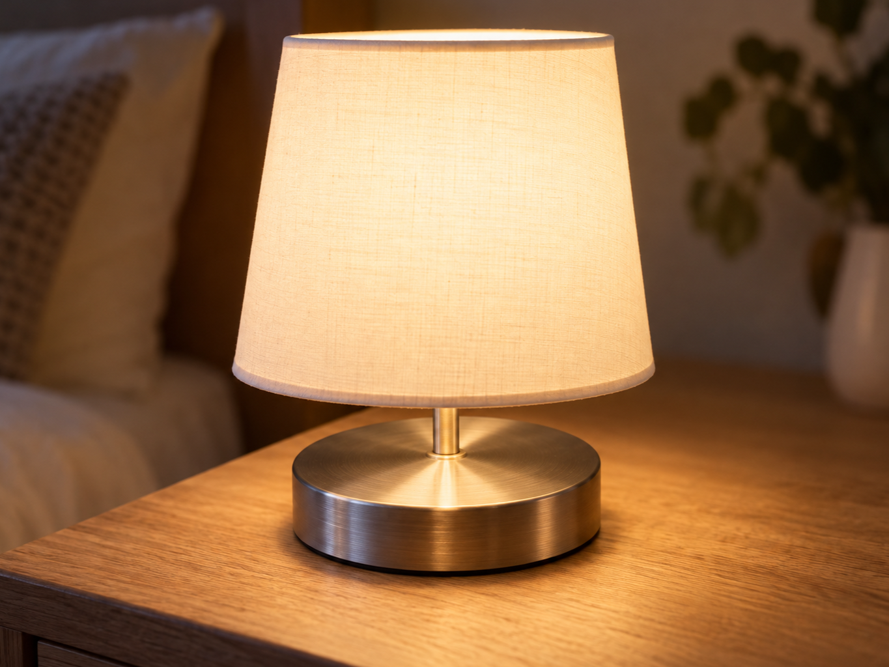
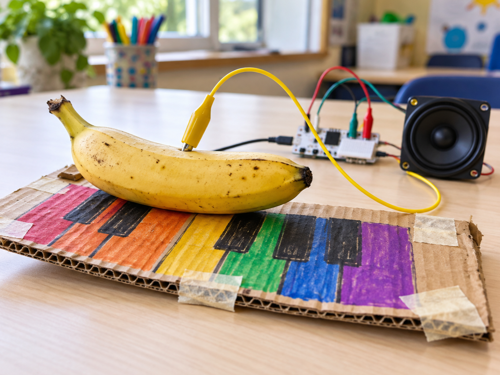

Touch lamp
DetectFinger touches the pad
DecideLamp should change state
DoSwitch the light
A capacitive touch sensor notices when a finger comes close to its metal pad.
It detects the tiny change in electric charge caused by your body, so no moving parts are needed.
Use it anywhere a project needs a hidden, wipe-clean or feather-light button.


from gpiozero import DigitalInputDevice
touch = DigitalInputDevice(16, pull_up=False)
touched = touch.is_activefrom picozero import TouchSensor
touch = TouchSensor(22)
touched = touch.is_touchedtouched is True or False.